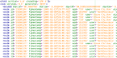
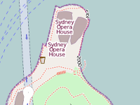
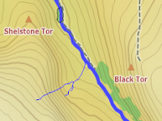

fosm
fosm is a free map of the planet which anyone can use and contribute to. It is a fork of OpenStreetMap licensed under the Creative Commons attribution and share-alike license CC-BY-SA.
Geodata

Our geodata is stored in standard OpenStreetMap format as a set of points, lines and areas making it usable for many purposes.
It can be used to make custom designed maps, to create routing applications or to produce interesting data analyses. Most tools that work with OSM data will also work with fosm.
A full copy of fosm's planet earth database is available here and minutely replication files are available here.
Contribute

New contributors are very welcome.
If you would like to try it out just create an account and configure your favorite editor. We currently support JOSM and Merkaartor. Please check our getting started page for more information.
Currently, all updates to OpenStreetMap are also being mirrored to the fosm database.
Please also consider joining our
mailing list.
Maps

Australia rendered with Mapnik

Dartmoor rendered with Maperitive
Maps made with fosm data.